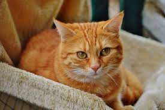
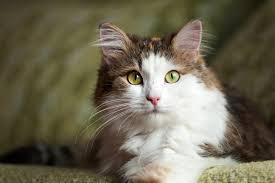
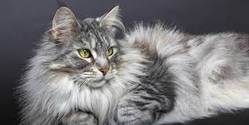
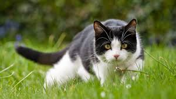
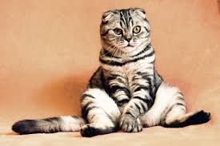

|  |
Simba
- 1 año y 7 meses, Macho, Esterilizado.
- Simba es un gato con mucha energia, hiperactivo y esa energia la recupera durmiendo mucho. Si quieres un gato que este contigo y te mire con cara de enojo, simba es ideal para ti.
|
|  |
kira
- 1 año y 4 meses, hembra, esterilizada.
Kira es una gata muy tranquila y cariñosa, duerme mucho y si necesitas alguien que se duerma contigo, ella es la indicada.
|
 |
Kitty
- 4 meses, hembra, esterilizada.
kitty es una gata bebe muy tranquila, si quieres una gata para criarla desde pequeña ella es la indicada.
|
|  |
Pelusa
- 1 año y 11 meses, hembra, Esterilizado
Pelusa es una gata tranquila y como su nombre; es muy suave llena de amor, quieres una gata que se difimune con tu sillon? ella es la indicada
|
|  |
Micha
- 1 año y 2 meses, hembra, esterilizada.
Micha es una gata muy amigable y cariñosa, le gusta comer y salir al parque, si quieres una gata que le gustan las aventuras al igual que a ti, ella es la gata indicada.
|
|  |
Nachito
- 1 año, Macho, Esterilizado
Nachito es un gato muy curioso y travieso, es inquieto y le gustan los juguetes en movimiento, si quieres pensar que hay un niño en la casa, el es el indicado
|